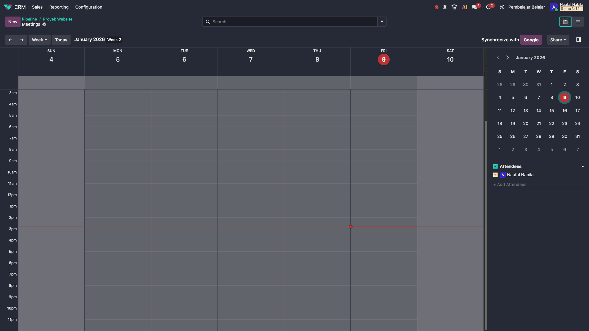

kita tidak perlu selalu membuka aplikasi Calendar. kita bisa menjadwalkan meeting langsung dari dokumen apa pun.
Data CRM Kosong?
Jika tampilan CRM kita masih kosong, buatlah data contoh:
Catatan: Di Odoo terbaru, kartu yang ada di dalam Pipeline ini disebut sebagai Opportunity (Peluang).
Jika tampilan CRM kita masih kosong, buatlah data contoh:
- Klik tombol New (Ungu) di pojok kiri atas.
- Isi judul (misal: Proyek Website), lalu klik Add.
- Klik pada kartu tersebut untuk membuka detailnya.
Catatan: Di Odoo terbaru, kartu yang ada di dalam Pipeline ini disebut sebagai Opportunity (Peluang).
- Buka record (dokumen) yang relevan, misalnya sebuah Opportunity (Kartu Pipeline) di CRM.
- Scroll ke bawah ke bagian Chatter (riwayat komunikasi).
- Klik tombol Activities (ikon jam/kegiatan).
- Pilih Activity Type: Meeting.
- Klik tombol Schedule (atau Jadwalkan).
- Odoo akan langsung membawa kita ke tampilan kalender untuk memilih waktu.
💡 Integrasi Otomatis
Saat kita membuat meeting lewat Chatter, dokumen asal (misal: Opportunity "Meja Kantor 500 Unit") akan otomatis tertaut di undangan meeting. Peserta bisa langsung klik link tersebut untuk melihat konteks rapat.

📸 Screenshot: Tombol Activity > Meeting di Chatter